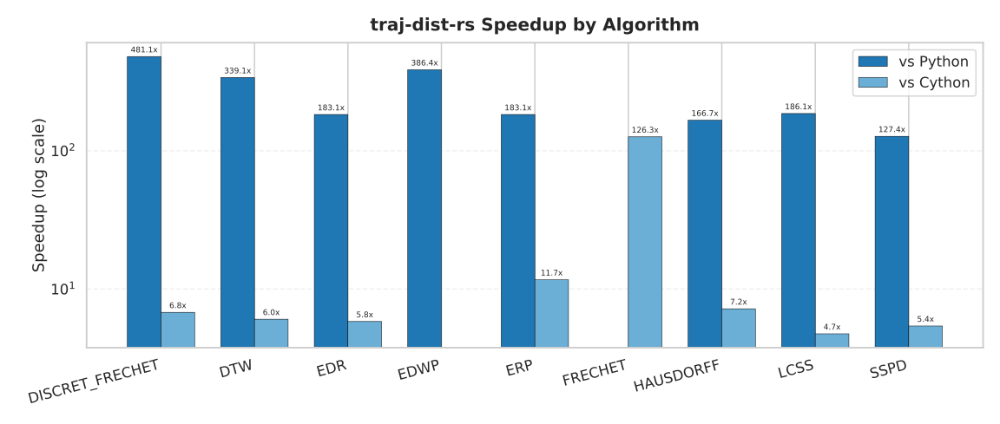
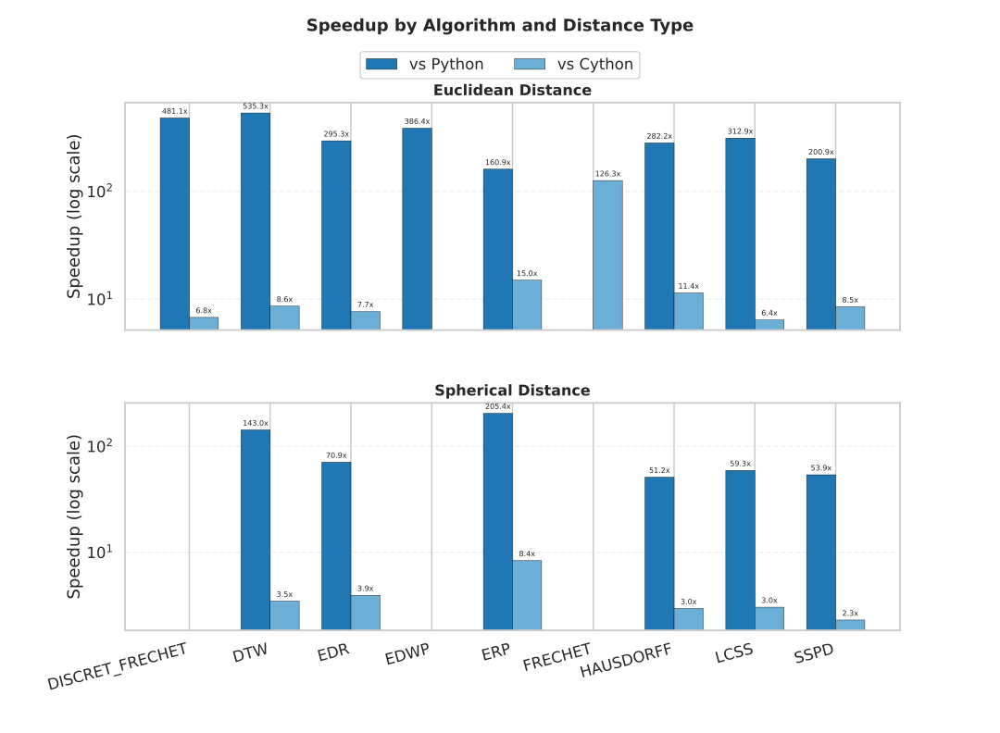
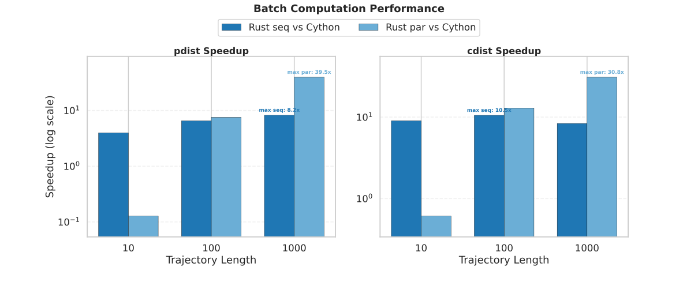

Performance Benchmark Report
Benchmarks are summarized using the median runtime.
TL;DR
traj-dist-rsis on average ~230x faster thantraj-dist (Python)traj-dist-rsis on average ~6.3x faster thantraj-dist (Cython)- Parallel batch execution reaches up to ~62.3x speedup over
traj-dist (Cython)on large inputs
Benchmark Scope
This report compares traj-dist-rs, traj-dist (Cython), and traj-dist (Python).
Algorithms covered:
- DISCRET_FRECHET
- DTW
- EDR
- ERP
- HAUSDORFF
- LCSS
- SSPD
Distance types:
- euclidean
- spherical
All summary values use the median runtime across benchmark samples. Batch benchmarks compare Rust and Cython implementations.
Figures



Summary Table
| algorithm | distance_type | hyperparam | traj-dist-rs | traj-dist (Cython) | traj-dist (Python) | traj-dist-rs vs traj-dist (Cython) | traj-dist-rs vs traj-dist (Python) |
|---|---|---|---|---|---|---|---|
| DISCRET_FRECHET | euclidean | eps=None; g=None | 0.0009 ms | 0.0062 ms | 0.4703 ms | 6.89x | 522.56x |
| DTW | euclidean | eps=None; g=None | 0.0008 ms | 0.0070 ms | 0.4521 ms | 8.75x | 565.12x |
| DTW | spherical | eps=None; g=None | 0.0026 ms | 0.0094 ms | 0.3807 ms | 3.62x | 146.40x |
| EDR | euclidean | eps=0.01; g=None | 0.0010 ms | 0.0064 ms | 0.3089 ms | 6.40x | 308.90x |
| EDR | spherical | eps=0.01; g=None | 0.0030 ms | 0.0091 ms | 0.2117 ms | 3.03x | 70.55x |
| ERP | euclidean | eps=None; g=[-122.41443, 37.77646] | 0.0016 ms | 0.0197 ms | 0.2717 ms | 12.31x | 169.81x |
| ERP | spherical | eps=None; g=[-122.41443, 37.77646] | 0.0042 ms | 0.0265 ms | 0.8237 ms | 6.31x | 196.11x |
| HAUSDORFF | euclidean | eps=None; g=None | 0.0014 ms | 0.0166 ms | 0.4231 ms | 11.86x | 302.21x |
| HAUSDORFF | spherical | eps=None; g=None | 0.0249 ms | 0.0727 ms | 1.3400 ms | 2.92x | 53.82x |
| LCSS | euclidean | eps=0.01; g=None | 0.0009 ms | 0.0058 ms | 0.2982 ms | 6.44x | 331.33x |
| LCSS | spherical | eps=0.01; g=None | 0.0028 ms | 0.0083 ms | 0.1700 ms | 2.96x | 60.71x |
| SSPD | euclidean | eps=None; g=None | 0.0020 ms | 0.0165 ms | 0.4206 ms | 8.25x | 210.30x |
| SSPD | spherical | eps=None; g=None | 0.0326 ms | 0.0712 ms | 1.8739 ms | 2.18x | 57.48x |
Key Findings
- Against
traj-dist (Cython), the largest single-case speedup is 12.31x on ERP (euclidean). - Against
traj-dist (Python), the largest single-case speedup is 565.12x on DTW (euclidean). - On euclidean benchmarks,
traj-dist-rsis on average 8.70x faster thantraj-dist (Cython)and 344.32x faster thantraj-dist (Python). - On spherical benchmarks,
traj-dist-rsis on average 3.50x faster thantraj-dist (Cython)and 97.51x faster thantraj-dist (Python). - In batch mode, parallel Rust reaches up to 62.32x speedup on
pdistand 51.53x oncdist.
Batch Computation
Configuration
- Algorithm: dtw
- Number of trajectories: 5 (fixed)
- pdist computation: 10 distances
- Trajectory lengths tested: 10, 100, 1000
- Distance types: euclidean, spherical
Results
| Function | Distance Type | Traj Length | Distances | traj-dist (Cython) (ms) | traj-dist-rs Seq (ms) | traj-dist-rs Par (ms) | Speedup (Seq) | Speedup (Par) |
|---|---|---|---|---|---|---|---|---|
| cdist | euclidean | 10 | 25 | 0.2315 ms | 0.0152 ms | 0.4327 ms | 15.23x | 0.54x |
| cdist | euclidean | 100 | 25 | 16.5879 ms | 0.9157 ms | 0.8914 ms | 18.11x | 18.61x |
| cdist | euclidean | 1000 | 25 | 1348.2364 ms | 98.2446 ms | 26.1649 ms | 13.72x | 51.53x |
| cdist | spherical | 10 | 25 | 0.3073 ms | 0.1091 ms | 0.4480 ms | 2.82x | 0.69x |
| cdist | spherical | 100 | 25 | 25.0034 ms | 8.5706 ms | 3.4372 ms | 2.92x | 7.27x |
| cdist | spherical | 1000 | 25 | 2492.1669 ms | 835.7577 ms | 245.3529 ms | 2.98x | 10.16x |
| pdist | euclidean | 10 | 10 | 0.0828 ms | 0.0169 ms | 0.5908 ms | 4.90x | 0.14x |
| pdist | euclidean | 100 | 10 | 5.1769 ms | 0.5084 ms | 0.6494 ms | 10.18x | 7.97x |
| pdist | euclidean | 1000 | 10 | 537.6616 ms | 40.2273 ms | 8.6270 ms | 13.37x | 62.32x |
| pdist | spherical | 10 | 10 | 0.1215 ms | 0.0397 ms | 1.0569 ms | 3.06x | 0.11x |
| pdist | spherical | 100 | 10 | 9.9536 ms | 3.4735 ms | 1.3983 ms | 2.87x | 7.12x |
| pdist | spherical | 1000 | 10 | 999.8620 ms | 322.2799 ms | 60.0632 ms | 3.10x | 16.65x |
Notes
traj-dist-rssequential already outperformstraj-dist (Cython)across the tested batch cases.- Parallel Rust provides the largest gains on longer trajectories.
- For small inputs, parallel overhead can outweigh the benefits of parallel execution.